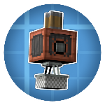
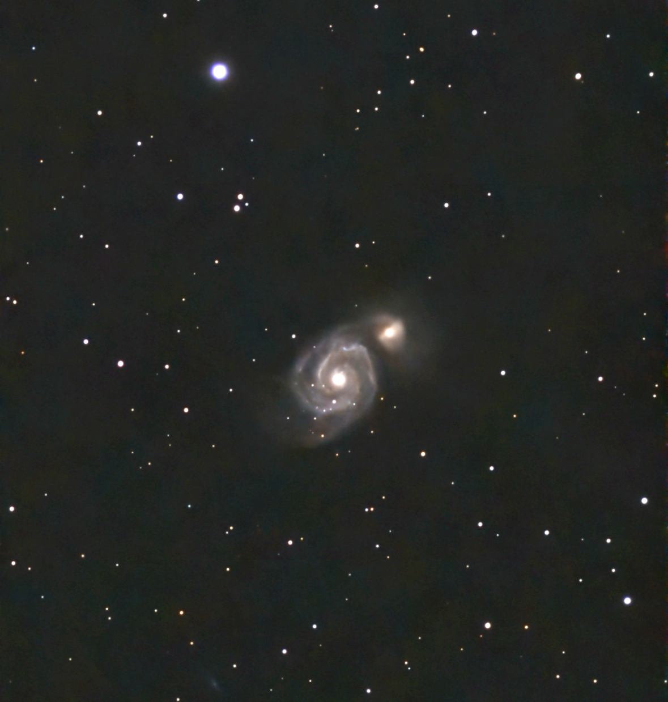

Minecraft Mods
My open source Minecraft mods, mostly addons to existing mods like Create and Farmers Delight.
Java Curseforge Modrinth

meow :3
Hi, I’m Sanne (also known as Pyzpre / Sieyva / Maylbox). This is my little corner of the internet.
A few things I mess with in my spare time.
My open source Minecraft mods, mostly addons to existing mods like Create and Farmers Delight.
Java Curseforge Modrinth

Whenever the skies are clear, I like to capture the objects that look over us.
I own two telescopes, one of which is motorized and has a built in camera (SeeStar S50).
Astrophotography SeeStar S50 Fuckass Dutch Weather

My ultimate bucketlist goal is to visit all 195 UN recognized countries on Earth.
I've currently visited 29 / 195 countries, with my most recent trip being to the USA in Sept 2025.
Traveling
Ways to find me or my stuff elsewhere on the internet.